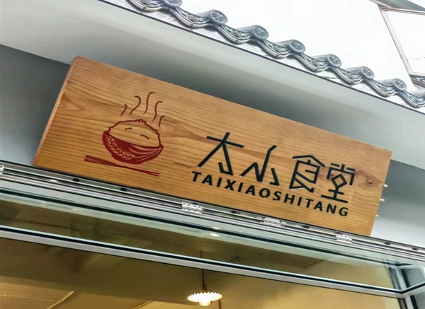

"Lush Scenery and Bustling Streets: Exploring Luofeng Mountain and Luofeng Street in Kunming"
圆通山又名螺峰山，昆明八景之一的螺峰叠翠，指的就是圆通山上山势险峻，古木参天的景致。 位于螺峰山下的螺峰街，离翠湖公园很近，北边是北门街与圆通街，南边接着平政街，再往下是青年路， 多家单位的宿舍位于街道两边，是翠湖周边一条充满市井烟火气的街道。
螺峰街两边的店铺，大多和这条街上居民的生活相关，有“中华老字号”吉庆祥总店、热闹的生鲜超市、 卖米、面、菜的小店，还有开了22年的黑龙江饺子馆，还有好吃的傣味、泸西烧洋芋、石林板桥凉粉、晨光烧饼、 素食餐厅。昆明皮鞋厂的退休老师傅，守着100多年光阴的老房子，继续帮居民们修鞋。
走在这条街上，会发现街上的居民和店铺之间，彼此间都很熟悉，打招呼的方式也很亲切。 买菜的大妈会和老板聊会儿天并问：“我前两天买的青辣椒做虎皮辣椒很好吃，今天怎么没有，你们再进点。” 与翠湖边文林街、文化巷、钱局街的文艺气息相比，螺峰街的热闹中，多了一份浓浓的烟火气，藏着很多家门口好吃的小店，走近了总会发现惊喜。
据了解，在翠湖周边“九巷十三坡”改造过程中，螺峰街的行道树全部换为樱花树，明年春天的景致，将格外好看。 位于螺峰街上的吉庆祥总店，是吉庆祥在昆明面积最大的一家店面，云腿月饼非常有名，店内滇式糕点、重油蛋糕、面筋萨琪玛、 茴饼、面包、威化饼玲琅满目，是很多老昆明人都喜爱的味道，现在，店内还推出了轻食三明治和雪媚娘等年轻人喜欢的产品，也深受消费者欢迎。